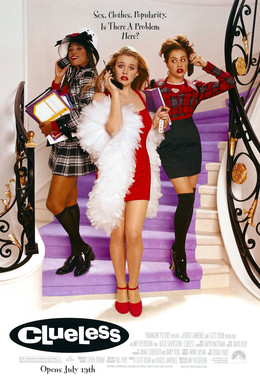

Amy Heckerling
1995
97 minutes
You saw this back in the day, of course--before you knew that it was a rewrite of Jane Austen's Emma. You're going to rewatch it now because one of your friends was asking people's opinions on which film held up better--Ten Things I Hate About You or Clueless. You're pretty sure you saw both, but this one made a stronger visual impression on you. Your friend, a woman in her early-to-mid 40's, was very insistent that Ten Things held up better after viewing both on a weekend away.
Ten Things I Hate About You had Heath Ledger, and Clueless had Brittany Murphy. Both of these actors suffered untimely deaths and provide a sad nostalgic feeling for a time that has passed for people in the same age bracket as you and your friend. You probably have a bit more affinity for young Brittany Murphy than young Heath Ledger, but that's still a wash since it's close.
The plot for Ten Things is very loosely derived from Shakespeare's The Taming of the Shrew, one of his minor works but still Shakespeare. Emma is one of Jane Austen's best novels, though you haven't actually read it. The closest you've come is self-publishing a version of this public domain text with Emma's name replaced with the word "Enema" throughout, which still renders it strange but amazingly readable. You have some fondness for this simply because of this three hundred page stupid dirty joke.
Clueless has the downside of at least one major cast member being an obnoxious conservative "celebrity influencer" now. It also suffers from some "rot" from some of the technologies that looked fresh and modern back in the day being painfully dated now, particularly as far as computers go. You can imagine this being a huge point against Clueless for people such as your friend.
The jokes in both are sharp and wicked, but the characters in Ten Things are overall much more likeable whereas the characters from Clueless are much more heavily lampooned and cartoonishly dim or self-absorbed. If you were an adult woman looking for escapism and wishing to be dropped into one of these worlds, you could see yourself more easily being friends with the harmless goofs in Ten Things. But you are a grown man, and this escapism is not the reason you would watch either of these films.
One of the main reasons Clueless is so fresh in your psychic memory is because of the infamous Iggy Azalea video for "Fancy", which is now hopelessly out of style for many people since she is little appreciated these days, though you had much more actual appreciation for Charli XCX in that particular video. And even the visuals of this film diluted through that video still remain very strong, whatever you think of the song or performer.
Your verdict is Clueless by a nose simply for the visuals. But you present it as a virtual tie for your friend as a simple acknowledgment that different people watch different films for different reasons. Anyone who cares more about plot and timelessness and a sense of escapism for a better era may prefer Ten Things. Someone like you who cares more about the outrageously colorful fashion and visuals and the dark comedy may prefer Clueless. Neither are wrong.
Time to choose something different: